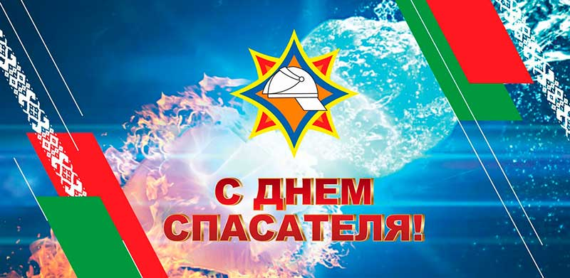

19 января – День спасателя
19 января в Беларуси отмечается профессиональный праздник — День спасателя, установленный Указом Президента Республики № 35 от 2 февраля 2000 года.
МЧС Республики Беларусь было создано в 1994 году на базе отряда службы спасения – Республиканского спецотряда по проведению первоочередных аварийно-спасательных работ, который вел свою деятельность с 1991 года. В 1998 году к МЧС была присоединена выведенная из состава МВД специальная военизированная пожарная служба.
Белорусская служба спасения сегодня — это около тысячи боевых подразделений, на вооружении которых находится более 6000 единиц техники.
Сегодня в структуре МЧС Беларуси созданы и функционируют 17 специальных служб, в том числе службы пожаротушения и аварийно-спасательных работ, химической и радиационной безопасности, инженерных работ, водолазная, медицинская, взрывотехническая, авиационная, поисково-спасательная, парашютно-десантная, понтонная, кинологическая и другие.
В настоящее время в стране сформирована целостная система предупреждения и ликвидации чрезвычайных ситуаций, состоящая из 21 отраслевой и 7 территориальных подсистем.
Какой бы надежной ни была техника, человеческий фактор играет далеко не последнюю роль. Соответственно, эффективность работы спасателей во многом зависит от их профессионализма. Подготовку специалистов для органов и подразделений по чрезвычайным ситуациям в Беларуси осуществляют 2 высших учебных заведения МЧС.
Повышение квалификации и переподготовку белорусских и зарубежных спасателей также осуществляет Институт переподготовки и повышения квалификации МЧС (ИППК). И сегодня сотрудники МЧС готовы выполнять весь спектр аварийно-спасательных работ.
